O sofrimento humano. Desde sempre, a condição humana é considerada decaída, repleta de sofrimentos, trevas e limitações — e todas as religiões identificam como causa dessa condição o pecado.
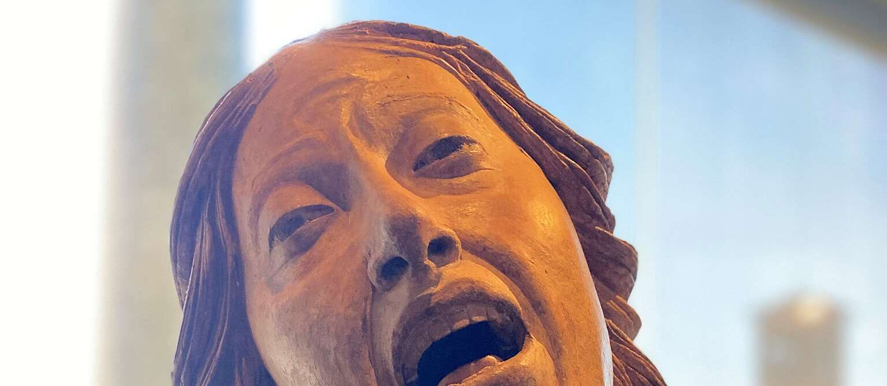
O sofrimento humano, gerado pelo pecado. Maria Madalena, Guido Mazzoni, terracota, ca. 1478, Museo Eremitani, Pádua.
Desde sempre, a condição humana é considerada decaída, repleta de sofrimentos, trevas e limitações.
"Só o homem, no seu natalício, é lançado nu sobre a terra nua, para irromper imediatamente em gritos e choro" — Plínio o Velho.
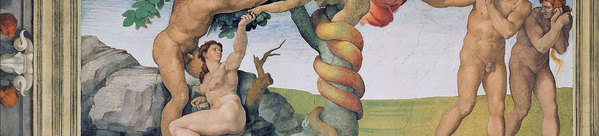
O pecado original e a expulsão do Paraíso, Michelangelo, ca. 1508-12, Capella Sistina, Vaticano. À esquerda, Adão e Eva cedem à tentação da serpente; à direita, são expulsos do Paraíso pelo anjo.
Prometeu e Atlas, dois defensores dos homens que foram castigados pelo seu pecado: Prometeu trouxe o fogo (o poder) aos homens, e por isso está acorrentado a uma rocha e tem o seu fígado devorado todos os dias pela águia de Zeus; e Atlas, que também se opôs aos deuses, tem de carregar a esfera celeste sobre as costas por toda a eternidade.
Terracota com figuras negras da Lacônia, pelo pintor Arkesilas, 560-550 a.C., Museo Gregoriano Etrusco, Musei Vaticani.
Ao invés de fazer o bem que quero, faço o mal que não quero.
Paulo de Tarso
Todas as religiões identificam, como causa da condição decaída do ser humano, o pecado — seja ele cometido nas origens pelos primeiros pais, seja por todos os seres humanos individualmente.
Na religião grega, no judaísmo, no cristianismo e no Islã, o pecado foi cometido nas origens pelos primeiros pais. No hinduísmo, budismo e outras religiões orientais, cada ser humano peca individualmente.
O pecado é descrito por Paulo de Tarso em termos existenciais: "Ao invés de fazer o bem que quero, faço o mal que não quero".
Também pode ser descrito como uma ofensa a Deus, como contrariar a vontade de Deus, como uma desordem com relação à ordem do universo, ou como um ato de autodestruição.
Por isso, todas as religiões admitem a necessidade de um juízo após a morte, e de fazer penitência em vida pelos próprios pecados.
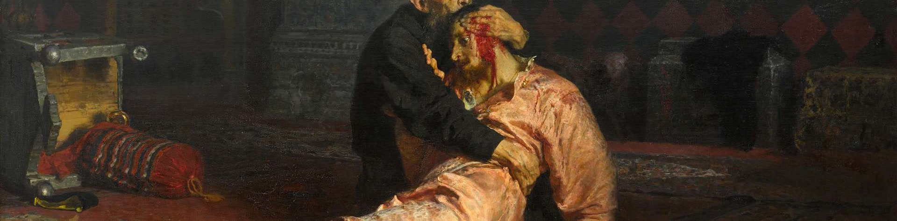
O pecado. Ivã o Terrível e seu filho Ivã no dia 16 de novembro de 1581, poucos momentos depois de o Tzar, durante um acesso de cólera, desferir o golpe que mataria o filho. Ilya Repin, 1885, Galeria Estatal Tretyakov, Moscou.
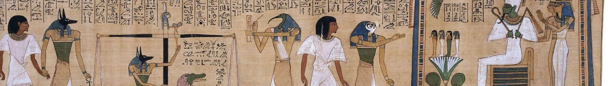
Papiro de Hunefer (Livro dos mortos): à esquerda, a alma de Hunefer é trazida ao julgamento pelo deus Anúbis (com cabeça de chacal), e o seu coração pesado na balança em comparação com uma pena das asas da deusa Maat, que simboliza a ordem do universo. Triunfante, a alma de Hunefer é levada por Hórus à presença de Osíris, deus da vida eterna. Ca. 1275 a.C., British Museum, Londres.
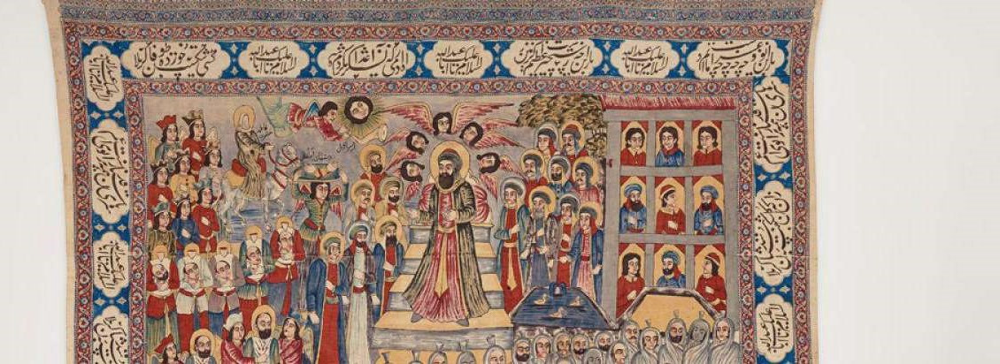
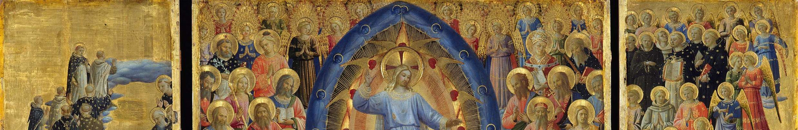
Em todas as tradições religiosas, existe a ideia de um juízo que avalia as ações humanas à luz de uma ordem cósmica ou divina.
No Livro dos Mortos, o coração do defunto é pesado na balança contra a pena de Maat. Se for mais pesado, será devorado pelo monstro Ammit. O deus-escriba Thoth registra o resultado.
Na tradição budista, a alma tem de superar dez julgamentos no inferno, cada um presidido por um rei-juiz que avalia as ações cometidas em vida.
Ruz-e mahshar: Issa (Jesus) julga os vivos e os mortos, cercado pelos anjos, justos e mártires. As obras boas e más são pesadas por dois anjos. No canto inferior direito, está o inferno.
No centro, dentro de uma mandorla, Cristo cercado pelos santos julga a humanidade. Os anjos conduzem as almas salvas para o céu; à direita, as almas condenadas são lançadas ao inferno.
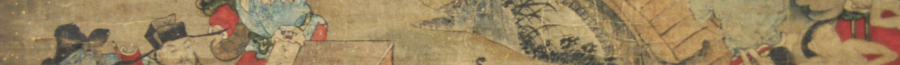
Um dos dez julgamentos que a alma tem de superar no inferno budista, séc. XVII, detalhe do rolo 7. Galeria de Arte de Greater Victoria, Victoria, British Columbia, Canadá.
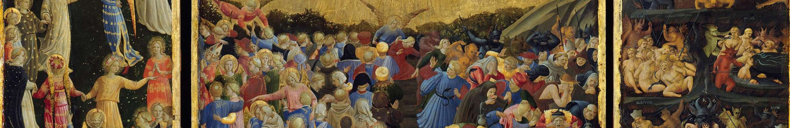
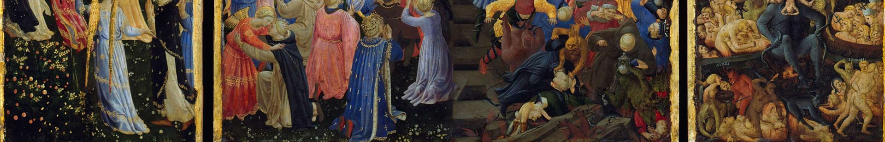
O Juízo Final, Fra Angelico. No centro, dentro de uma mandorla, está Cristo, cercado pelos santos; na asa esquerda, estão os anjos conduzindo as almas salvas para o céu; no centro, em baixo, estão as almas humanas sendo julgadas; à direita, em baixo, está o inferno. Ca. 1435-40, Gemäldegalerie, Berlim.
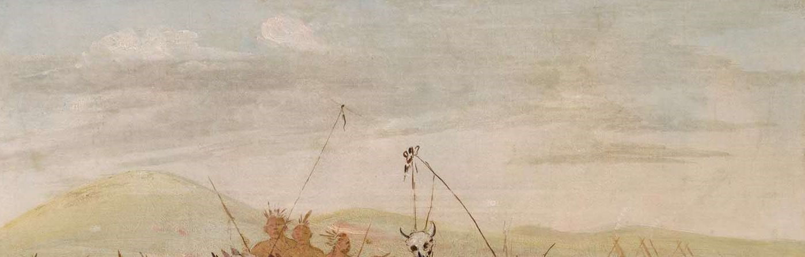
Sofrimento auto-infligido numa cerimônia religiosa Sioux, George Catlin, ca. 1835-7. O guerreiro suporta a dor causada por uma fisga presa à pele do peito, a fim de pagar pelos seus pecados. Smithsonian American Art Museum, Washington, DC.
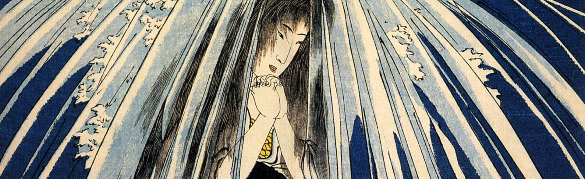
Hatsuhana (Primeira Flor) faz penitência sob a cachoeira Tonozawa enquanto pede pela cura do joelho de seu filho, até as autoridades a matarem. A penitência tem a finalidade de que os seus pecados não atrapalhem a cura do filho.
Utagawa Kuniyoshi, gravura em estilo ukio-e, ca. 1841-2, do livro O conto de Hatsuhana, mulher sábia e rebelde.
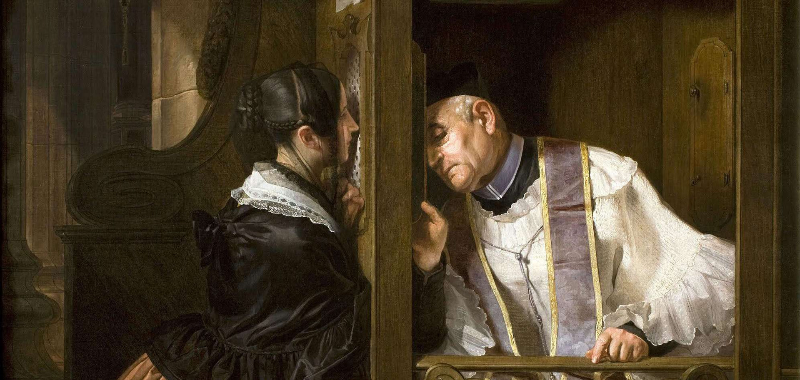
A confissão, Giuseppe Molteni, 1838, Gallerie d'Italia Piazza Scala, Milão. O sacramento da confissão — a penitência sacramental — é o caminho cristão para a reconciliação com Deus e a remissão dos pecados.
Todas as religiões admitem a necessidade de um juízo após a morte, e de fazer penitência em vida pelos próprios pecados.
Com o iluminismo, a ideia do pecado foi abolida. O mal no ser humano viria apenas da ignorância e da credulidade das pessoas.
Este foi o panorama durante toda a Antiguidade, Idade Média e começo da Era Moderna. O pecado era universalmente reconhecido como causa do sofrimento humano.
Com o iluminismo, a ideia do pecado foi abolida. O mal no ser humano viria apenas da ignorância e da credulidade das pessoas, e a razão, através da ciência, eliminaria todo o sofrimento do mundo e implantaria o regime da perfeita liberdade.
Durante algum tempo, falou-se ainda do "conflito das duas naturezas (animal e espiritual) no ser humano", uma forma secularizada de explicar o conflito entre bem e mal no coração humano.
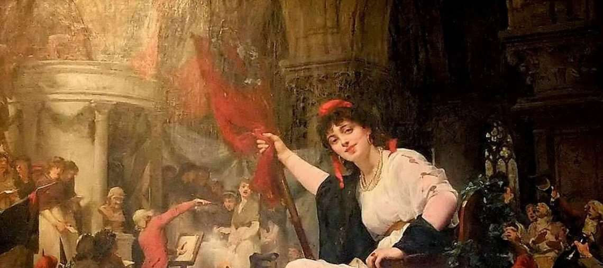
A festa da deusa razão em Notre-Dame de Paris no dia 10 de novembro de 1793, Charles-Louis Müller, 1878. A "razão", representada por uma cantora da Ópera de Paris, está sentada sobre um trono adornado de folhas de carvalho, enquanto pisoteia um crucifixo. Museu Sainte-Croix, Poitiers.
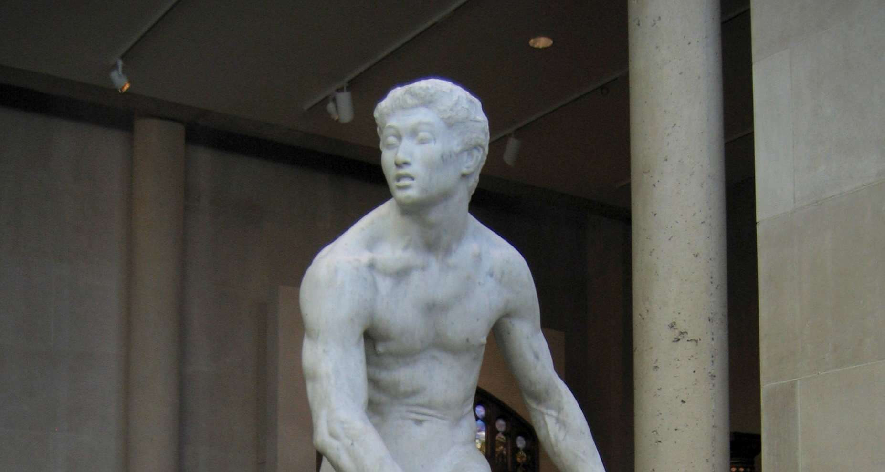
A luta das duas naturezas no ser humano, George Grey Barnard, 1888, mármore, MET, New York. A escultura representa o conflito entre a natureza animal e a espiritual — uma forma secularizada de explicar o conflito entre bem e mal.
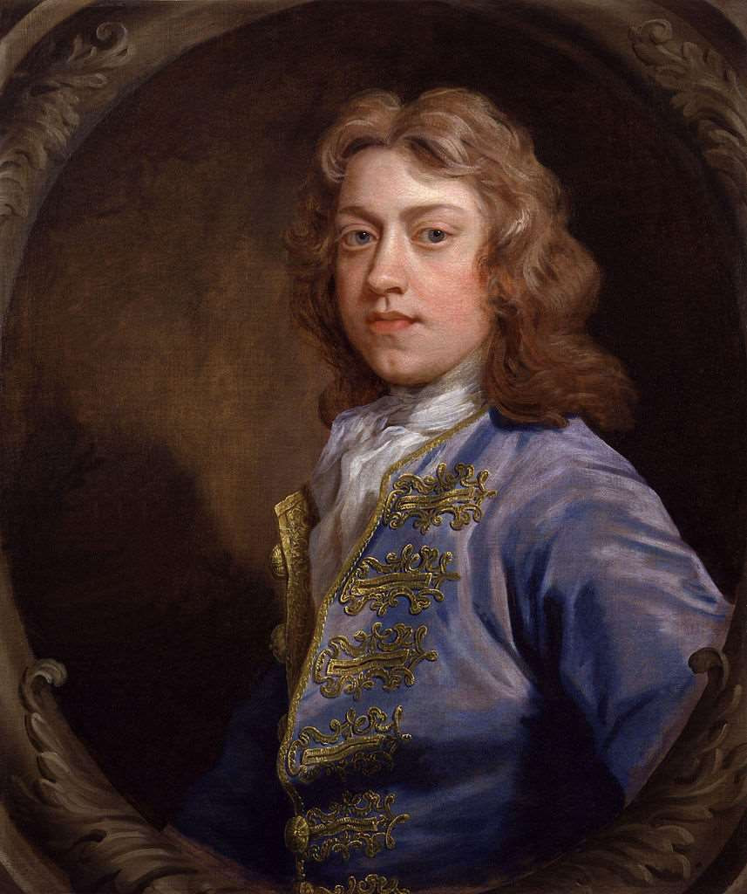
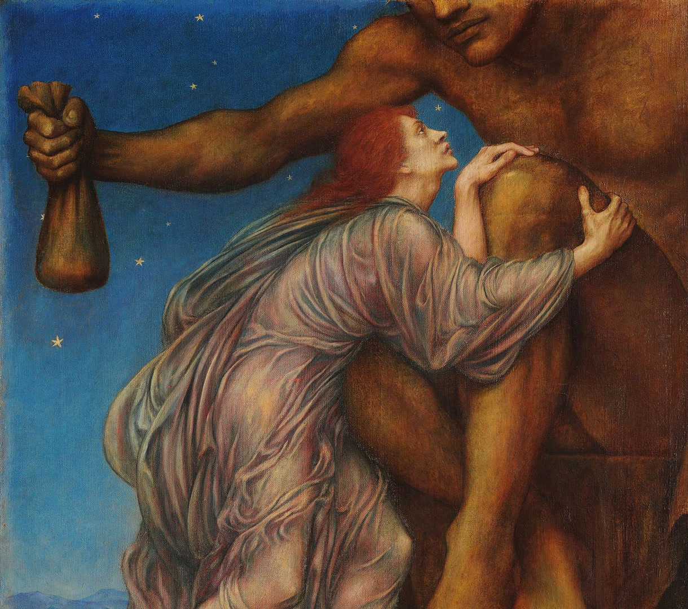
Com Bernard de Mandeville, o pecado e o vício foram erigidos em motores do progresso econômico: "os vícios privados, se bem administrados por políticos hábeis, podem resultar em benefícios públicos". A cobiça, a avareza e a ambição seriam as fontes da prosperidade pública.
Acima, possível retrato de Bernard de Mandeville, de John Closterman, antes de 1711, National Portrait Gallery, Londres. À direita, A adoração de Mammon, Evelyn de Morgan, ca. 1909, De Morgan Centre, Londres.
Hoje isto já não parece tão claro.
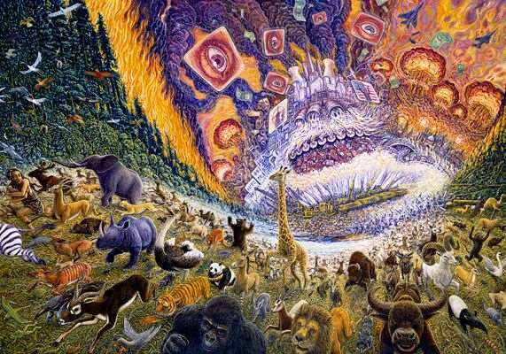
A marcha do progresso, Mark Henson, 1995. O pecado permanece — e as suas consequências se acumulam.